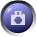

Guided Tours können sowohl in der Autor- als auch in der Lernerrolle angelegt werden. Zum Aufzeichnen einer Tour dient eine blaue Schaltfläche rechts unten im Freestyle Learning Programmfenster, die eine kleine Kamera symbolisiert. Durch Drücken dieser Schaltfläche können Sie jederzeit vom gerade betrachteten Element einen "Schnappschuss" machen. Dadurch wird dieses Element in die aktuelle Tour übernommen. Dies wird Ihnen im Fenster des Tour Creators angezeigt. Dort können Sie mit der rechten Maustaste auf das neue Element klicken und "Eigenschaften" auswählen, um die Beschreibung des Elements zu bearbeiten oder auch ein anderes Bild zuzuordnen.
Zum Speichern der Tour wählen Sie im Tour Creator-Fenster im Menü "Tour / Speichern". Es erscheint ein Dialog, in dem Sie die Tour benennen und ein Bild zuordnen können. Nun kann Ihre neue Tour von allen lokalen Freestyle Learning-Benutzern ausgewählt und gestartet werden.
 |
Element in Guided Tour aufnehmen |
Fügt das aktuell betrachtete Element zur ausgewählten Guided Tour hinzu |
Zurück zur Hauptseite